G01 authentic dual-video scene gate, then GT-free frozen coarse Body/full local mesh registration only after all gates pass
INCOMPLETE_OR_FAILED. Authenticity gate; GT access restricted to source authenticity auditor.
Result card · Actual metrics · Failure evidence · Frozen manifest
G1–G4 / S0–S4: NOT_RUN. No injection, initialization or registration. Separate native Ring frames; no certified Body deployment pose.
BODY_RING_POSE_CERTIFICATE_AUDIT.json
Support@2px 0.979113; boundary p95 6.000000px; no injection. Source/pose SHA in metrics.
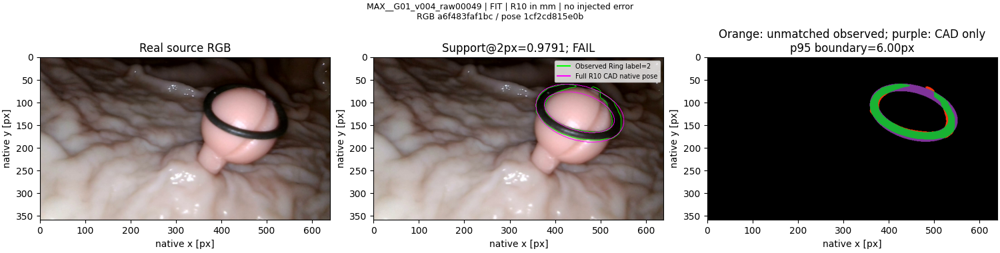
Support@2px 0.939557; boundary p95 8.056032px; no injection. Source/pose SHA in metrics.
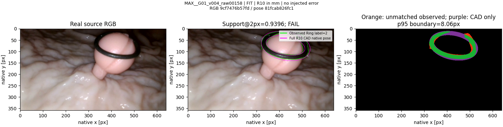
Support@2px 0.952011; boundary p95 8.485281px; no injection. Source/pose SHA in metrics.
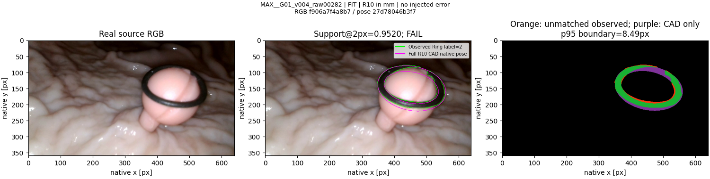
Support@2px 0.978364; boundary p95 7.000000px; no injection. Source/pose SHA in metrics.
Support@2px 0.986834; boundary p95 5.830952px; no injection. Source/pose SHA in metrics.
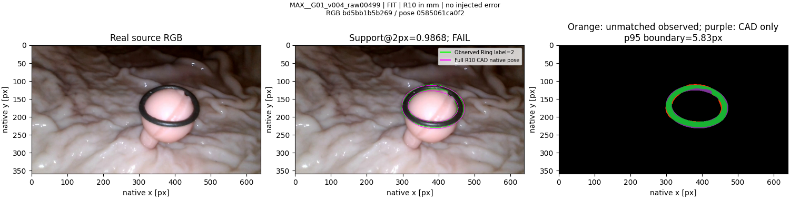
Support@2px 0.980801; boundary p95 4.242641px; no injection. Source/pose SHA in metrics.
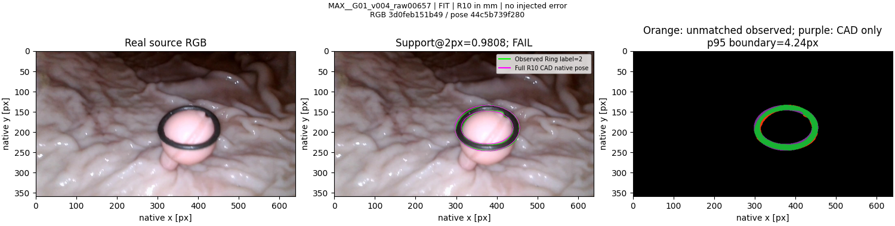
Support@2px 0.979927; boundary p95 5.000000px; no injection. Source/pose SHA in metrics.
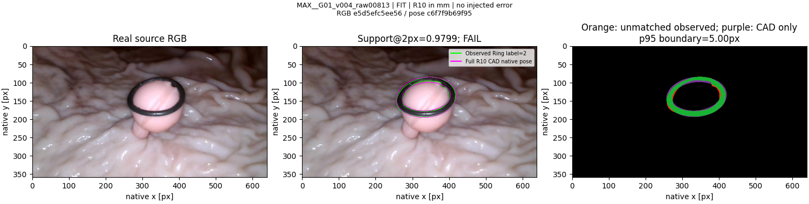
Support@2px 0.974699; boundary p95 4.242641px; no injection. Source/pose SHA in metrics.
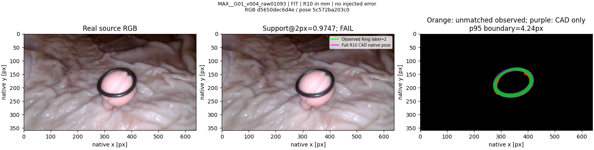
Support@2px 0.970773; boundary p95 5.000000px; no injection. Source/pose SHA in metrics.
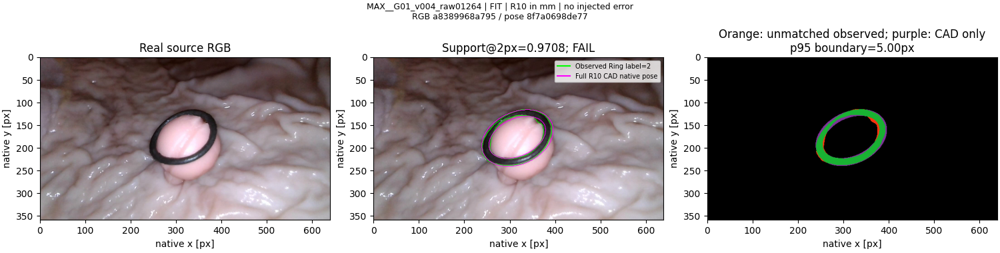
Support@2px 0.978089; boundary p95 3.605551px; no injection. Source/pose SHA in metrics.
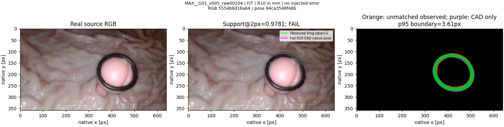
Support@2px 0.976042; boundary p95 3.000000px; no injection. Source/pose SHA in metrics.
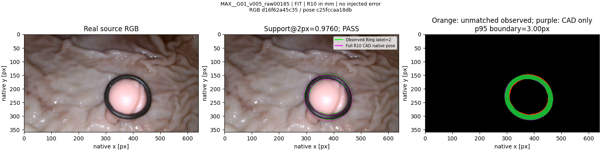
Support@2px 0.983948; boundary p95 2.828427px; no injection. Source/pose SHA in metrics.
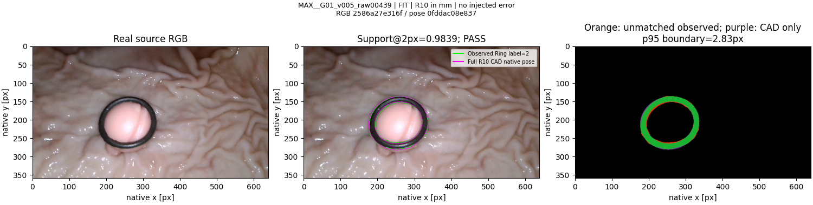
Support@2px 0.990122; boundary p95 2.828427px; no injection. Source/pose SHA in metrics.
Support@2px 0.975116; boundary p95 3.162278px; no injection. Source/pose SHA in metrics.
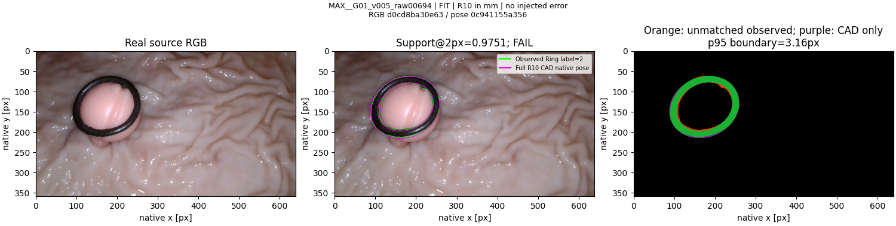
Support@2px 0.967264; boundary p95 5.956857px; no injection. Source/pose SHA in metrics.
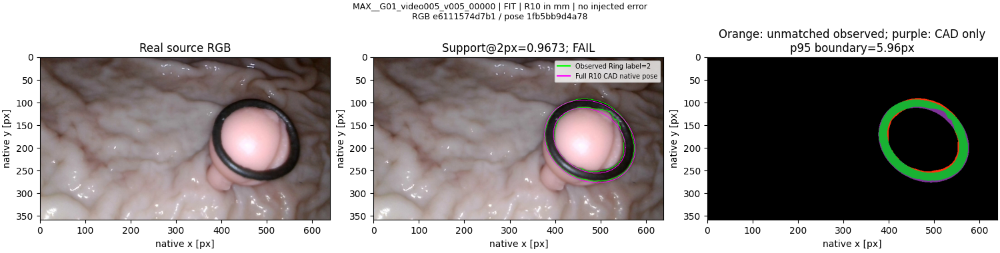
Support@2px 0.993989; boundary p95 2.236068px; no injection. Source/pose SHA in metrics.
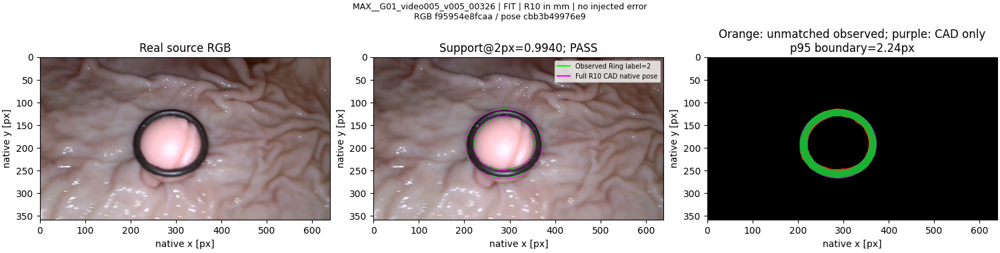
Support@2px 0.977533; boundary p95 3.162278px; no injection. Source/pose SHA in metrics.
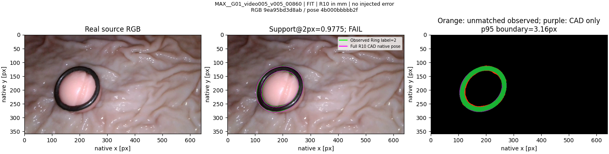
Support@2px 0.967468; boundary p95 6.324555px; no injection. Source/pose SHA in metrics.
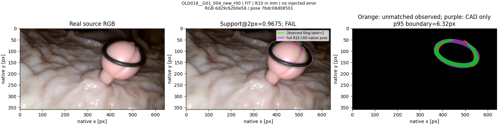
Support@2px 0.985340; boundary p95 6.000000px; no injection. Source/pose SHA in metrics.
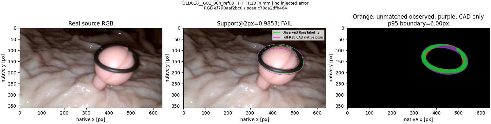
Support@2px 0.971649; boundary p95 5.000000px; no injection. Source/pose SHA in metrics.
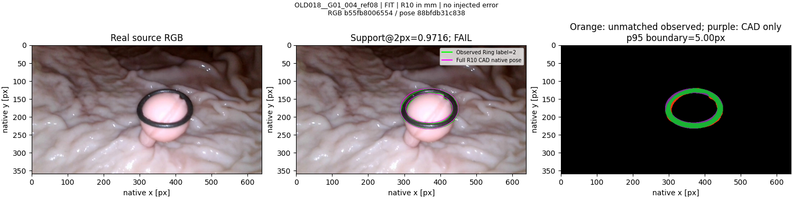
Support@2px 0.980415; boundary p95 4.000000px; no injection. Source/pose SHA in metrics.
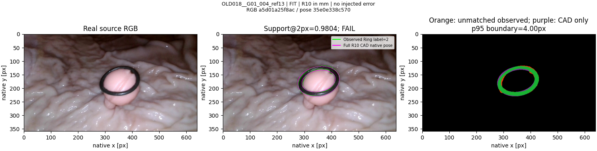
Support@2px 0.941304; boundary p95 7.615773px; no injection. Source/pose SHA in metrics.
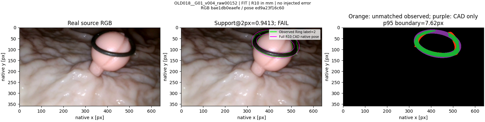
Support@2px 0.979302; boundary p95 6.000000px; no injection. Source/pose SHA in metrics.
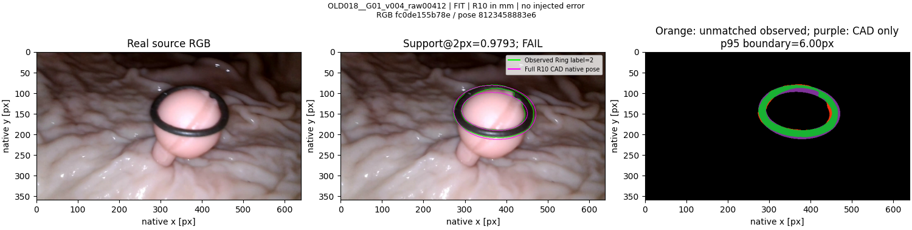
Support@2px 0.978121; boundary p95 5.000000px; no injection. Source/pose SHA in metrics.
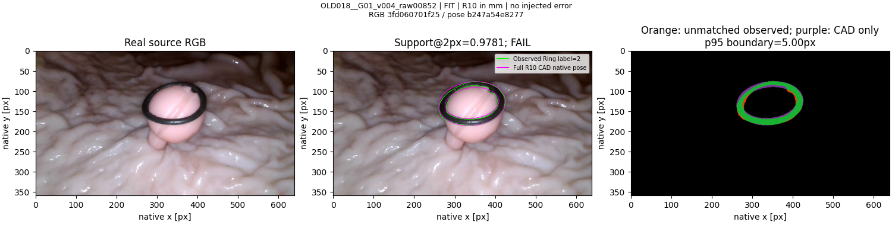
Support@2px 0.957573; boundary p95 5.000000px; no injection. Source/pose SHA in metrics.
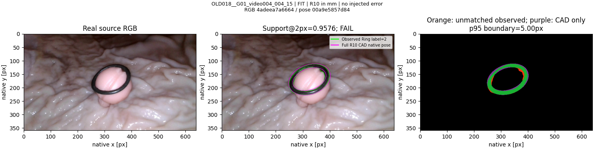
Support@2px 0.983009; boundary p95 6.000000px; no injection. Source/pose SHA in metrics.
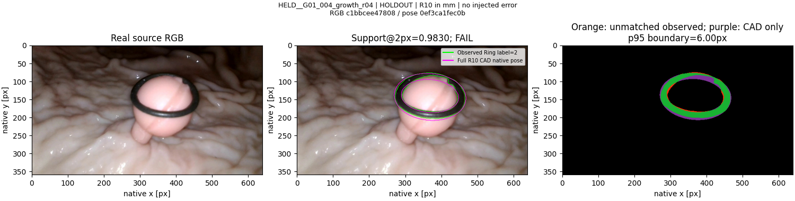
Support@2px 0.978558; boundary p95 4.123106px; no injection. Source/pose SHA in metrics.
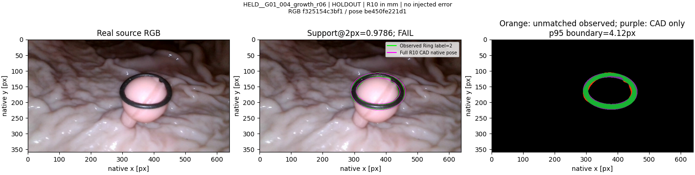
Support@2px 0.981579; boundary p95 5.000000px; no injection. Source/pose SHA in metrics.
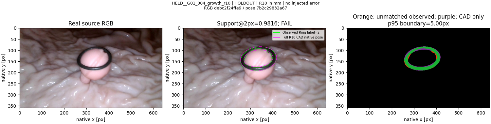
Support@2px 0.959818; boundary p95 5.830952px; no injection. Source/pose SHA in metrics.
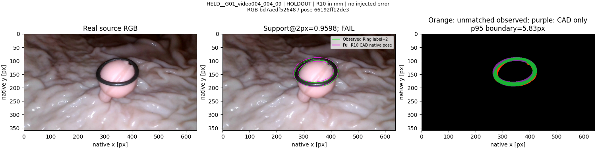
Support@2px 0.960176; boundary p95 7.615773px; no injection. Source/pose SHA in metrics.
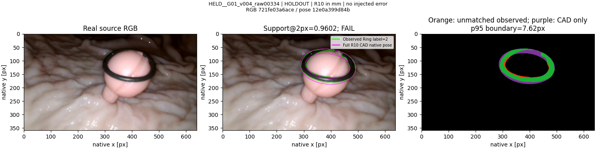
Support@2px 0.987578; boundary p95 3.154164px; no injection. Source/pose SHA in metrics.
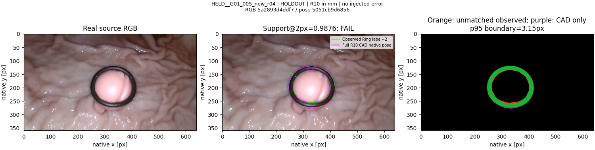
Support@2px 0.980633; boundary p95 4.000000px; no injection. Source/pose SHA in metrics.
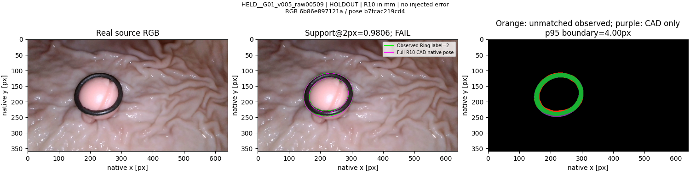
Support@2px 0.979277; boundary p95 4.000000px; no injection. Source/pose SHA in metrics.
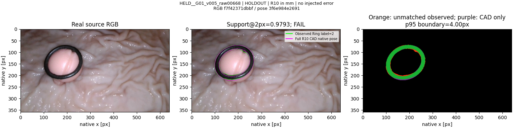
Historical input / inferred candidate / fixed metric projection; not a new scientific result. Current verification outcomes are above.
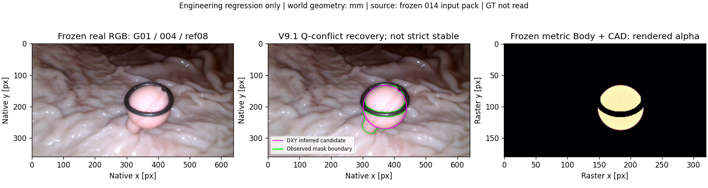
[
{
"attempt": "0004-G0_scene_audit-c13118bd",
"stage": "G0_scene_audit",
"status": "FAIL",
"category": "engineering_gate",
"reason": "SCENE_AUTHENTICITY_FAILED: BODY_RING_POSE_UNCERTIFIED; RING_PROJECTION_GATE",
"evidence": "attempts/0004-G0_scene_audit-c13118bd/result.json"
}
]